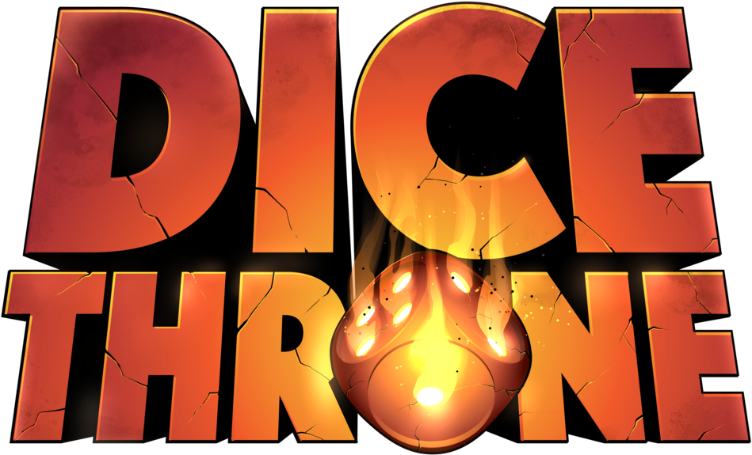

Dice Throne Hub
A classroom project evolved into a more polished fan website with improved layout, page hierarchy, responsive styling, and a dedicated project path under the portfolio.
- Multi-page static site with themed design and shared styling.
- Includes dedicated pages for gameplay, heroes, strategies, and expansions.
- Uses embedded media, structured content sections, and custom visual styling to present the game clearly.